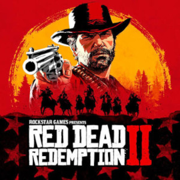
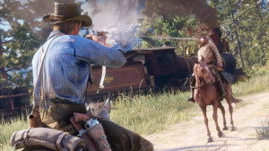
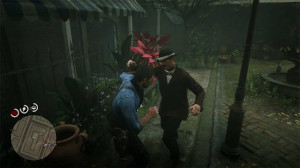
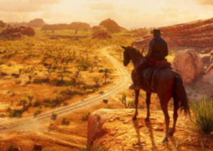

Como jornalista e um absoluto apaixonado por videogames, posso te dizer sem medo de errar: Red Dead Redemption 2 não é apenas um jogo; é um marco cultural. Quando a Rockstar Games lançou este épico do faroeste em 2018, as expectativas eram astronômicas. O que recebemos foi um título que redefiniu o significado de "mundo aberto" e "narrativa interativa" para toda uma geração.

O consenso da indústria é unânime, refletido em seu impressionante Metascore de 97. A crítica destacou não apenas a beleza técnica, mas o peso emocional da jornada:
Arthur Morgan é indiscutivelmente um dos personagens mais bem escritos da história dos videogames. A forma como sua moralidade é testada e sua lealdade à gangue desmorona lentamente entrega um peso dramático de partir o coração.

O jogo capta perfeitamente a melancolia do Velho Oeste chegando ao fim. O avanço da civilização e da lei sufocando o estilo de vida livre (e criminoso) da gangue é palpável do primeiro ao último capítulo.

O trabalho de câmera dinâmico (especialmente durante as cavalgadas e os tiroteios com a "câmera de morte") e a trilha sonora original evocam os melhores westerns de Sergio Leone.
